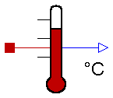
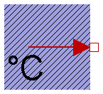
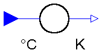
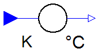
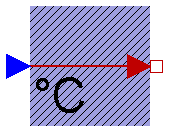

The components of this package are provided for the convenience of people working mostly with Celsius units, since all models in package HeatTransfer are based on Kelvin units.
Note, that in package SIunits.Conversions, functions are provided to convert between the units Kelvin, degree Celsius, degree Fahrenheit, and degree Rankine. These functions allow, e.g., a direct conversion of units at all places where Kelvin is required as parameter. Example:
import SIunits.Conversions.*;
Modelica.Thermal.HeatTransfer.HeatCapacitor C(T0 = from_degC(20));
| Name | Description |
|---|---|
| ToKelvin | Conversion block from °Celsius to Kelvin |
| FromKelvin | Conversion from Kelvin to °Celsius |
| FixedTemperature | Fixed temperature boundary condition in degree Celsius |
| PrescribedTemperature | Variable temperature boundary condition in °Celsius |
| TemperatureSensor | Absolute temperature sensor in °Celsius |

This is an ideal absolute temperature sensor which returns the temperature of the connected port in Celsius as an output signal. The sensor itself has no thermal interaction with whatever it is connected to. Furthermore, no thermocouple-like lags are associated with this sensor model.
model TemperatureSensor "Absolute temperature sensor in °Celsius"
Modelica.Blocks.Interfaces.OutPort T(
redeclare type SignalType = NonSI.Temperature_degC);
Interfaces.HeatPort_a port;
equation
T.signal[1] = to_degC(port.T);
port.Q_dot = 0;
end TemperatureSensor;

This model defines a fixed temperature T at its port in [degC], i.e., it defines a fixed temperature as a boundary condition.
| Name | Default | Description |
|---|---|---|
| T | Fixed Temperature at the port [degC] |
model FixedTemperature "Fixed temperature boundary condition in degree Celsius" parameter NonSI.Temperature_degC T "Fixed Temperature at the port"; Interfaces.HeatPort_b port; equation port.T = from_degC(T); end FixedTemperature;

This component converts all input signals from Celsius to Kelvin and provides them as output signals.
| Name | Default | Description |
|---|---|---|
| n | 1 | Number of inputs (= number of outputs) |
model ToKelvin "Conversion block from °Celsius to Kelvin"
parameter Integer n=1 "Number of inputs (= number of outputs)";
Modelica.Blocks.Interfaces.InPort Celsius(
final n=n);
Modelica.Blocks.Interfaces.OutPort Kelvin(
final n=n);
equation
Kelvin.signal = from_degC(Celsius.signal);
end ToKelvin;

This component converts all input signals from Kelvin to Celsius and provides them as output signals.
| Name | Default | Description |
|---|---|---|
| n | 1 | Number of inputs (= number of outputs) |
model FromKelvin "Conversion from Kelvin to °Celsius"
parameter Integer n=1 "Number of inputs (= number of outputs)";
Modelica.Blocks.Interfaces.InPort Kelvin(
final n=n);
Modelica.Blocks.Interfaces.OutPort Celsius(
final n=n);
equation
Celsius.signal = to_degC(Kelvin.signal);
end FromKelvin;

This model represents a variable temperature boundary condition The temperature value in [degC] is given by the input signal to the model. The effect is that an instance of this model acts as an infinite reservoir able to absorb or generate as much energy as required to keep the temperature at the specified value.
model PrescribedTemperature
"Variable temperature boundary condition in °Celsius"
Interfaces.HeatPort_b port;
Modelica.Blocks.Interfaces.InPort T(
final n=1);
equation
port.T = from_degC(T.signal[1]);
end PrescribedTemperature;